철도신호기사 (2010-05-09 기출문제)
1과목: 전자공학
1. LC발진회로에서 LC회로의 L값을 2배로 하면 발진 주파수의 변화는?
- 변화가 없다.
 로 된다.
로 된다. 로 된다.
로 된다. 로 된다.
로 된다.
(정답률: 알수없음)

2. 이상적인 연산증폭기의 특성으로 0(zero)이 되어야 하는 것은?
- 입력 오프셋 전압
- 입력 임피던스
- 주파수 대역폭
- open loop 이득
(정답률: 알수없음)
3. 다음 중 차동증폭기에 대한 설명으로 틀린 것은?
- 연산증폭기의 입력으로 사용된다.
- 차동신호만 증폭하는 것이 좋다.
- 낮은 입력 임피던스와 높은 이득을 가진다.
- 동상신호제거비(CMMR)가 클수록 성능이 좋다.
(정답률: 알수없음)
4. 다음 중 반도체에 관한 설명으로 틀린 것은?
- 진성 반도체는 상온에서 전자와 정공의 농도가 같다.
- 반도체내의 전류는 드리프트전류와 확산전류로 구분된다.
- 온도상승으로 공유결합이 전자와 원자의 쌍이 생성된다.
- 진성반도체에 3가 또는 5가의 불순물 원자를 혼입하는 과정을 도핑(doping)이라한다.
(정답률: 알수없음)
5. 그림과 같은 회로가 발진하기 위한 조건이 아닌 것은?
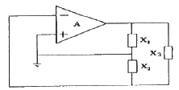
- 루프 이득이 1 이어야 한다.
- X1 + X2 + X3 = 0
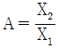
- X1 과 X2는 같은 부호를 가져야 하고, X3는 이와 반대 부호를 가져야 한다.
(정답률: 알수없음)
6. 다음 중 트랜지스터에서 주파수 특성을 좋게 하기 위한 것은?
- 베이스 폭을 얇게 한다.
- 컬렉터 폭을 얇게 한다.
- 이미터 폭을 크게 한다.
- 이미터와 컬렉터의 폭을 크게 한다.
(정답률: 알수없음)
7. 다음 중 공중파의 음악방송에 사용되는 변조방식은?
- FM(주파수변조)
- PM(위상변조)
- PWM(펄스폭변조)
- PCM(펄스코드변조)
(정답률: 알수없음)
8. 그림과 같은 회로에서 출력전압 Vo에 해당되는 것은?
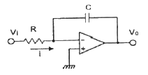
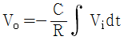
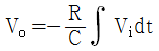
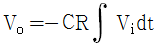
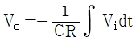
(정답률: 60%)
9. 이미터 접지 트랜지스터 회로에 있어서 입력신호와 출력신호 간의 위상차는?
- 위상차가 없다.
- 90도의 위상차가 있다.
- 180도의 위상차가 있다.
- 270도의 위상차가 있다.
(정답률: 84%)
10. 다음 중 전력제어에 사용되는 3단자 반도체 소자는?
- 제너 다이오드
- 터널 다이오드
- 트라이액
- 광전 트랜지스터
(정답률: 알수없음)
11. 트랜지스터 증폭회로에 대한 설명으로 틀린 것은?
- 이미터 접지회로의 입력은 베이스가 된다.
- 베이스 접지회로의 입력은 컬렉터가 된다.
- 컬렉터 접지회로의 입력은 베이스가 된다.
- 이미터 접지회로의 출력은 컬렉터가 된다.
(정답률: 알수없음)
12. 다음 중 펄스에서 링깅(ringing)이 발생하는 주된 이유는?
- 펄스의 상승시간이 늦기 때문에 생긴다.
- 높은 주파수의 성분에서 공진하기 때문에 생긴다.
- 낮은 주파수의 성분에 공진하기 때문에 생긴다.
- RL회로의 시정수가 크기 때문에 생긴다.
(정답률: 알수없음)
13. 진폭 변조에서 반송파의 진폭이 Vc[V]이고 변조파의 진폭이 Vm[V]인 경우 변조도 m[%]은?
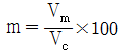
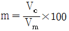
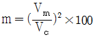
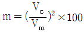
(정답률: 알수없음)
14. 다음 중 RS 플립플롭회로의 동시 입력에 대한 단점을 개선한 것은?
- JK 플립플롭
- 시프트레지스터
- D 플립플롭
- 어큐뮬레이터
(정답률: 알수없음)
15. 다음 중 FM을 AM과 비교할 때 틀린 것은?
- 잡음이 적다.
- 에코의 영향이 많다.
- 점유 주파수 대역이 넓다.
- 초단파대 통신에 적합하다.
(정답률: 82%)
16. 다음 중 십진수 15를 그레이 코드로 변환한 것은?
- 1000
- 1111
- 0111
- 1010
(정답률: 73%)
17. 다음 중 디엠퍼시스(de-emphasis) 회로에 대한 설명으로 틀린 것은?
- FM 수신기에 이용된다.
- 일종의 적분회로이다.
- 높은 주파수의 출력을 감소시킨다.
- 반송파를 억제하고 양측파대를 통과시킨다.
(정답률: 알수없음)
18. 다음 중 크로스오버 일그러짐이 생기는 원인으로 적합한 것은?
- 입력전압이 작을 때 베이스 전류와 컬렉터 전류가 거의 흐르지 않기 때문이다.
- 전력 증폭시의 특성곡선이 대칭이 되지 않기 때문이다.
- 입력전압이 너무 커서 포화영역에서 파형이 잘리기 때문이다.
- 전력 증폭회로에서 열폭주 현상이 생기기 때문이다.
(정답률: 알수없음)
19. 다음 중 스위치 소자가 갖추어야 할 조건으로 적합한 것은?
- 상승시간은 길고 하강시간이 짧아야 한다.
- 턴-오프 시간이 길어야 한다.
- 축적시간이 길어야 한다.
- 상승 및 하강속도가 빨라야 한다.
(정답률: 알수없음)
20. 2진 상태의 수를 최대 64개 갖는 카운터를 구성하려고 할 경우, 최소로 필요한 플립플롭의 수는?
- 2
- 4
- 6
- 8
(정답률: 알수없음)
2과목: 회로이론 및 제어공학
21. R-L 직렬 회로에서 L = 30[mH], R = 10[Ω]일 때 이 회로의 시정수는?
- 3[ms]
- 3 × 10-1[ms]
- 3 × 10-2[ms]
- 3 × 10-3[ms]
(정답률: 알수없음)
22. 다음의 회로 단자 a, b 에 나타나는 전압은?
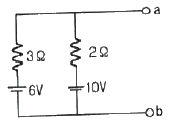
- 3.6[V]
- 8.4[V]
- 10[V]
- 16[V]
(정답률: 73%)
23. 1 – cosωt 를 라플라스 변환하면?
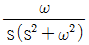
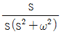
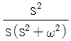
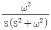
(정답률: 알수없음)
24. 어떤 회로에 E = 100 + j20 [V]인 전압을 가했을 때 I = 4 +j3 [A]인 전류가 흘렀다면 이 회로의 임피던스는?
- 19.5 + j3.9 [Ω]
- 18.4 - j8.8 [Ω]
- 17.3 - j8.5 [Ω]
- 15.3 + j3.7 [Ω]
(정답률: 알수없음)
25. 대칭 3상 Y결선 부하에서 각 상의 임피던스가 16+j12[Ω]이고, 부하전류가 10[A]일 때 이 부하의 선간 전압은?
- 235.4[V]
- 346.4[V]
- 456.7[V]
- 524.4[V]
(정답률: 알수없음)
26. 기본파의 전압이 100[V], 제3 고조파 전압이 40[V], 제5 고조파 전압이 30[V]일 때 이 전압파의 왜형률은?
- 10[%]
- 20[%]
- 30[%]
- 50[%]
(정답률: 알수없음)
27. 최대값이 Em인 정현파의 파형률은?
- 1
- 1.11
- 1.41
- 2
(정답률: 알수없음)
28. 분포정수회로에서 저항 0.5[Ω/㎞], 인덕턴스가 1[μH/㎞], 정전용량 6[㎌/㎞], 길이 10[㎞]인 송전선로에서 무왜형선로가 되기 위한 컨덕턴스는?
- 1[℧/㎞]
- 2[℧/㎞]
- 3[℧/㎞]
- 4[℧/㎞]
(정답률: 알수없음)
29. R= 10[kΩ], L=10[mH], C=1[㎌]인 직렬회로에 크기가 100[V]인 교류 전압을 인가할 때 흐르는 최대 전류는? (단. 교류전압의 주파수는 0에서 무한대 까지 변화한다.)
- 0.1[mA]
- 1[mA]
- 5[mA]
- 10[mA]
(정답률: 55%)
30. 다음과 같은 회로가 정저항 회로가 되기 위한 저항 R의 값은?
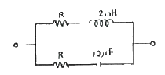
- 8.2[Ω]
- 14.1[Ω]
- 20[Ω]
- 28[Ω]
(정답률: 55%)
31. 다음 중 Z 변환함수
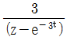
에 대응되는 라플라스 변환함수는?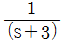
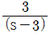
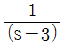
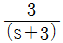
(정답률: 70%)
32.
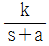
인 전달함수를 신호 흐름선도로 표시하면?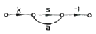
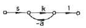
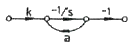
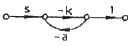
(정답률: 알수없음)
33. 어떤 제어시스템이
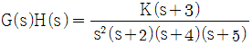
일 때, 근궤적의 수는?- 1
- 3
- 5
- 7
(정답률: 알수없음)
34. 다음 중 논리식
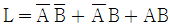
을 간단히 하면?- A + B
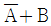
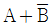
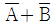
(정답률: 알수없음)
35. 다음 중 Routh 안정도 판별법에서 그림과 같은 제어계가 안정되기 위한 K의 값은 적합한 것은?
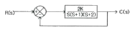
- 1
- 3
- 5
- 7
(정답률: 알수없음)
36.
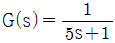
일 때, 보드 선도에서 절점 주파수 ω0는?- 0.2[rad/sec]
- 0.5[rad/sec]
- 2[rad/sec]
- 5[rad/sec]
(정답률: 알수없음)
37.
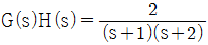
의 이득여유는?- 20[dB]
- -20[dB]
- 0[dB]
- ∞[dB]
(정답률: 알수없음)
38. 어느 시퀀스 제어시스템의 내부 상태가 9가지로 바뀐다면 이를 설계할 때 필요한 플립플롭의 최소 개수는?
- 3
- 4
- 5
- 9
(정답률: 알수없음)
39.
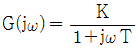
일 때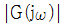
와 ∠G(jω)는?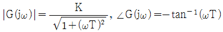
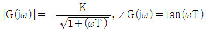
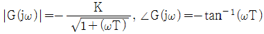
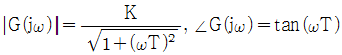
(정답률: 알수없음)
40. 다음 특성 방정식 중에서 안정된 시스템인 것은?
- s4 + 3s3 - s2 + s + 10 = 0
- 2s3 + 3s2 + 4s + 5 = 0
- s4 - 2s3 - 3s2 + 4s + 5 = 0
- s5 + s3 + 2s2 + 4s + 3 = 0
(정답률: 알수없음)
3과목: 신호기기
41. 단상 유도 전압 조정기에서 단락 권선의 직접적인 역할은?
- 고조파 방지
- 용량 증대
- 역률 보상
- 누설리액턴스로 인한 전압강하 방지
(정답률: 알수없음)
42. 건널목용 전동차단기에 사용하는 직류직권 전동기의 관성을 흡수하는 제동방법으로 사용하는 것은?
- 전자석 제동
- 프러깅 제동
- 회생제동
- 마찰 연축기
(정답률: 알수없음)
43. 정격전압 24V, 저항 192Ω 계전기의 낙하전류는 몇 [mA] 이상인가?
- 37.5[mA]
- 87.5[mA]
- 112.5[mA]
- 125[mA]
(정답률: 알수없음)
44. MJ81형 선로전환기의 제어 및 표시에서 전환제어시 몇 초 이상 표시가 확인되지 않으면 제어전원이 차단되어야 하는가?
- 3초
- 5초
- 9초
- 12초
(정답률: 알수없음)
45. 전동차단기의 동작 전원이 정전되었을 때에는 차단기가 열린 위치에서 중력에 의해 약 몇 초 이내에 수평위치까지 닫혀져야 되는가?
- 5초
- 8초
- 10초
- 12초
(정답률: 알수없음)
46. 220V, 3상 유도 전동기의 전 부하 슬립이 4%이다. 공급전압이 10% 저하된 경우의 전 부하 슬립은?
- 4[%]
- 5[%]
- 6[%]
- 7[%]
(정답률: 80%)
47. 정격 부하 20A에서 전부하 전압 100V, 무부하 전압 137V일 때 전압변동률은?
- 10[%]
- 17[%]
- 28[%]
- 37[%]
(정답률: 알수없음)
48. 60Hz, 슬립 3%, 회전수 1164rpm인 유도 전동기의 극수는?
- 2극
- 4극
- 6극
- 8극
(정답률: 90%)
49. 변압기의 자속을 만드는 전류는?
- 부하 전류
- 철손 전류
- 자화 전류
- 포화 전류
(정답률: 알수없음)
50. 50kVA, 3000/100V 변압기의 무부하 전류 0.5A, 입력 600W 일 때 철손 전류는?
- 0.1[A]
- 0.2[A]
- 0.3[A]
- 0.4[A]
(정답률: 알수없음)
51. 기둥 및 정지가 빈번하고 토크의 변동이 심한 부하의 전동기로 가장 적합한 것은?
- 직권전동기
- 가동복권전동기
- 차동복권전동기
- 분권전동기
(정답률: 알수없음)
52. 신호용 무극선조계전기가 여자되었다가 15.6V에서 무여자 되었다. 이 계전기의 저항은?(단, 이때 여자전류는 0.12A이고, 무여자 전압은 여자 전압의 65%이다)
- 500[Ω]
- 300[Ω]
- 200[Ω]
- 140[Ω]
(정답률: 알수없음)
53. 궤도계전기가 갖추어야 할 사항이 아닌 것은?
- 여자전류가 클 것
- 동작이 확실할 것
- 제어구간이 길 것
- 소비전력이 적을 것
(정답률: 알수없음)
54. 브흐홀쯔(Buchholz) 계전기로 보호되는 기기는?
- 변압기
- 발전기
- 동기 전동기
- 회전 변류기
(정답률: 알수없음)
55. 계전기의 접점에 대한 설명으로 잘못된 것은?
- R은 반위 또는 무여자, 낙하접점이다.
- N은 정위 또는 여자, 동작접점이다.
- N은 가동접점, C는 고정접점이다.
- C는 공통접점이다.
(정답률: 알수없음)
56. 변압기의 철심에는 히스테리시스 현상이 있으므로 변압기에 정현파 기전력이 유기되려면 그 여자전류의 파형은?
- 편평파가 된다.
- 첨두파가 된다.
- 파형(Hz)마다 다르다.
- 정현파가 된다.
(정답률: 알수없음)
57. 권선형 유도 전동기의 가동시 2차측에 저항을 넣는 이유는?
- 회전수 감소
- 기동 전류 감소와 토크 증대
- 기동 토크 감소
- 기동 전류 증가
(정답률: 알수없음)
58. 철도 건널목 지장물 검지 장치 중 발광기에서 수광기 간의 거리는 몇 [m] 이하인가?
- 40[m]
- 50[m]
- 60[m]
- 70[m]
(정답률: 알수없음)
59. 전동차단기의 회로제어기의 접점 수는?
- 2개
- 4개
- 5개
- 6개
(정답률: 50%)
60. 교류전기 선로전환기의 전동기 회전방향을 제어하는 기기는?
- 전철정자
- 제어계전기
- 회로제어기
- 계자권선접속기
(정답률: 알수없음)
4과목: 신호공학
61. 계전연동장치의 신호제어회로 결선도를 작성할 때 필요한 조건으로 틀린 것은?
- 도착점 계전기의 여자 접점
- 진로조사계전기의 여자 접점
- 진로쇄정계전기의 낙하 접점
- 전철쇄정계전기의 여자 접점
(정답률: 알수없음)
62. 열차집중제어장치(CTC)의 데이터 교환 방식 중 시간분할 다중화 방식의 설명으로 맞지 않은 것은?
- 신호들을 겹치지 않게 하기 위하여 표본화 속도가 커야 한다.
- 비트 삽입식과 문자 삽입식이 있다.
- 송 ㆍ 수신간에 비동기 방식이 주로 사용된다.
- 통신의 형태는 PTP(Point-to-Point) 시스템 등을 이용한다.
(정답률: 알수없음)
63. 선로전환기의 정 ㆍ 반위 결정에 관한 내용 중 정위 방향 결정방법으로 틀린 것은?
- 본선과 본선 또는 측선과 측선의 경우 주요한 방향
- 탈선 선로전환기는 탈선시키는 방향
- 본선 또는 측선과 안전측선의 경우에는 안전측선의 방향
- 본선과 측선과의 경우에는 측선의 방향
(정답률: 알수없음)
64. NS형 전기선로전환기 내부에 설치된 회로제어기의 역할은?
- 전동기에 유입하는 전원을 개, 폐하기 위하여
- 전동기의 회전력을 감속하거나 전달하기 위하여
- 전동기의 전원을 차단하여 표시회로를 구성하기 위하여
- 전동기가 회전 또는 정지할 때 충격을 주지 않도록 관성을 흡수하기 위하여
(정답률: 알수없음)
65. 건널목 지장물검지장치의 설명으로 옳은 것은?
- 발광기에서 수광기간의 거리는 50m 이하로 한다.
- 발광기의 빔 확산 각도는 5° 이하로 한다.
- 건널목 경계지점 외방 400m 위치에서 지장 경고등의 확인이 가능하여야 한다.
- 수광기는 일출시에 10° 이내에 직사광선이 들어가지 않도록 한다.
(정답률: 알수없음)
66. 경부고속철도 구간에서 정보전송장치로부터 수신된 불연속정보를 선로에 따라 포설한 루프코일을 통하여 차상장치로 전송하는 내용이 아닌 것은?
- 실제운행 속도와 허용속도의 비교 검토 정보 제공
- 양방향 운전을 허용하기 위한 운행방향 변경
- 터널 진ㆍ출입시 차량내 기밀장치 동작
- 절대 정지구간 제어 및 전차선 절연구간 정보 제공
(정답률: 알수없음)
67. 신호원격제어장치에서 궤도회로경계표지 사이의 거리[m]는?
- 500 ~ 900
- 1000 ~ 1500
- 1600 ~ 2100
- 2200 ~2700
(정답률: 알수없음)
68. 열차집중제어장치(CTC)의 효과에 해당되지 않는 것은?
- 선로용량 증대 및 안전도 향상
- 열차운전 정리의 신속 및 정확화
- 폐색구간이 필요 없고 여객안내 자동화
- 신호보안장치의 고장 파악 용이
(정답률: 알수없음)
69. 고속철도의 열차속도 제어와 관련이 없는 것은?
- 전차선 전압
- 레일온도 검지 장치
- 폐색구간 방호 스위치
- 지장물 검지 장치
(정답률: 알수없음)
70. 교류 궤도회로의 단락감도 향상을 위한 방법을 설명한 것으로 틀린 것은?
- 레일을 용접, 장대 레일화 하여 전압강하를 없앤다.
- 송전전압을 증가하고, 한류장치의 저항 또는 리액터를 증가한다.
- 궤도계전기에 방렬로 저항을 삽입하고, 반위접점으로 단락한다.
- 위상을 적당히 하여 열차 단락시의 회전역률을 최대 회전역률에서 이동시킨다.
(정답률: 알수없음)
71. 전자연동장치를 중앙 레벨, 현장 레벨, 선로변 레벨로 구분할 때 현장 레벨에 속하는 것은?
- 역정보처리장치
- 전기선로전환기
- 전기통신모듈
- 쇄정취소스위치
(정답률: 알수없음)
72. 궤도계전기를 현장에 설치하고 실내에는 반응계전기를 설치하고자 한다. 가장 안전하고 경제적인 결선방법은? (단, 실선은 기구함 및 옥내배선, 점선은 옥외배선이다.)
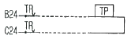
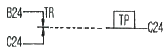
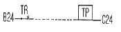
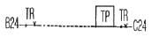
(정답률: 알수없음)
73. 4현시 구간의 전기동차용 A.T.S장치에서 Y일 때 공진주파수[KHz]는?
- 130
- 122
- 106
- 98
(정답률: 알수없음)
74. 장내 신호기의 확인거리는 몇 [m] 이상인가?
- 400[m]
- 500[m]
- 600[m]
- 700[m]
(정답률: 알수없음)
75. 역 사이에 설치된 3위식 자동폐색구간에서 항상 진행 신호로 운행하는 경우의 최소운전시격(TR)은? (B : 폐색구간길이[m], L : 열차길이[m], C : 신호현시 확인에 요하는 최소거리[m], t : 선행열차가 1의 신호기를 통과할 때부터 3의 신호기가 진행신호를 현시할 때까지 시간[sec], V : 열차속도[km/h])
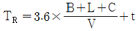
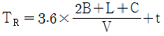
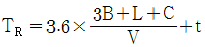
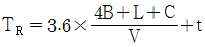
(정답률: 알수없음)
76. 그림과 같은 도식기호에 대한 설명으로 옳은 것은?
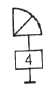
- 진로표시기가 없는 입환신호기
- 4번 선로의 입환표지
- 4번으로 상시 개통되는 입환신호기
- 4진로가 있는 진로표시기가 붙은 입환표지
(정답률: 알수없음)
77. 전기 연동장치의 진로조사 계전기 회로에 삽입하지 않는 계전기는?
- 전철선별계전기
- 정자 및 입구반응계전기
- 전철표시계전기
- 전철제어계전기
(정답률: 알수없음)
78. 다음 중 주간과 야간의 신호현시 방식이 다른 신호기는?
- 단등형신호기
- 등렬식신호기
- 완목식신호기
- 색등식신호기
(정답률: 알수없음)
79. 신호기주에 적용되는 안전율은?
- 3.5 이상
- 2.5 이상
- 3 이상
- 2 이상
(정답률: 70%)
80. 열차의 차축에 의하여 궤도회로가 단락 되었을 때 전원 장치에 과다한 전류가 흐르는 것을 제한하기 위한 장치는?
- 궤조절연
- 한류장치
- 임피던스 본드
- 레일 본드
(정답률: 알수없음)